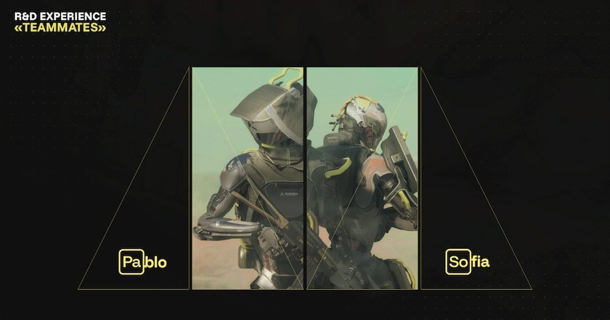

2026-11-26 · 行业观察 / 生产管线

11 月 25 日，Vertical Slice 刊出一篇基于多名在职员工的匿名报道： 育碧要求新项目的提案中说明生成式 AI 将如何加速开发；如果不打算用，必须向公司解释理由， 而理由「不足以说服高管」的项目，很难拿到批准。
11 月 26 日，育碧回应包括 GamesIndustry.biz 在内的多家媒体，原话是： 「我们鼓励团队探索 AI 在哪些地方有用、能为他们的工作带来价值。这不意味着项目必须使用生成式 AI。」 公司强调，是否使用、如何使用，由团队根据游戏和玩家体验自行判断。
到这里，大多数中文报道就收尾了：「育碧被曝强制使用 AI，官方否认」。 但这句否认和那篇报道并不冲突——它们说的是两件事。 报道说的是流程，官方否认的是义务。 而真正改变了一家公司日常运转的，从来是流程，不是义务。
这个题最容易被写成「站队」，所以我们先把三层事实分开摆。
第一层，可核实的公开数字（11 月 19 日财报）：
第二层，单一信源的指控（11 月 25 日）： 提案必须写 AI、不写要解释、理由不足难获批。 多名匿名员工，方向一致，但没有书面文件流出。 一名员工对媒体的描述是：「管理层态度转变之后，我们所有人都感觉自己一直被生成式 AI 逼到了墙角。」
第三层，公司的否认（11 月 26 日）： 「不意味着项目必须使用生成式 AI」。注意这句话的措辞——它否认的是「必须」， 没有否认「提案里要写」。
所以真正悬空的问题只有一个，而且非常具体： 那份提案文档里，关于 AI 的那一栏，原文是怎么写的？填「不使用」时，由谁评估、按什么标准评估？ 这一页纸没公开，双方就永远可以各说各话。这不是谁在撒谎，是证据不在场。
需要额外说明的是时间关系：11 月 19 日宣布成立 AI 子公司并披露减员，11 月 25 日出现提案报道，11 月 26 日公司回应。 三件事隔了七天，看起来很顺。但「裁员」与「AI」之间没有公开的因果证据，育碧也未承认二者相关。 那些岗位据公司说法集中在「已取消或重做的项目」。 把并置读成因果，是这类报道最常见的失真方式，我们不这么读。
这是整件事里最反直觉的一点，也是中文报道几乎全部漏掉的一点。
一道禁令是可以被反抗的。它有明确的边界、明确的受害者、明确的申诉对象： 你可以引用劳动合同，可以找工会，可以举证「我的项目因此受损」。禁令产生对抗。
而「举证责任倒置」不禁止任何行为。它只是把默认值从「不用」改成了「用」。 一个团队仍然可以不用 AI，只需要写一段理由。这段话不会写进任何考核表， 但它会出现在审批会上，出现在某个副总裁翻阅的第 14 页。
做个简单的推演。两个提案，质量、预算、团队配置完全相同：
A 给审批者的是一个可以转述的承诺；B 给审批者的是一份需要被说服的论证。 在资源紧张、季度目标压顶的年份，前者通过的概率天然更高——不是因为有人下了命令， 是因为人天然偏爱「已经替我想好下一步」的方案。
这就是员工说出「被逼到墙角」的机制：没有一条规则可以指控，但每一步都在往同一个方向走。 禁令留下的是把柄，激励结构留下的是自我审查。 这也是为什么育碧那句「不强制」是真诚的，同时也是无效的——它回答的是「有没有命令」， 而员工感受到的是「有没有选择」。
这是我们认为最值得展开的一层。中文报道把所有讨论都压在「AI 会不会取代美术」这一个问题上， 但「generative AI」在游戏公司内部其实指向三件毫无关系的事：
育碧的提案政策，把这三件事打包成了同一个词。 而这三件事的伦理重量、技术风险、玩家接受度，完全不在一个量级上。
后果是可以预见的：最该被约束的 ① 没有被约束住，最不需要表率的 ② 变成了表格作业。 一个团队在提案里写「我们用 AI 生成占位贴图做原型」，和写「我们用 AI 生成最终立绘」， 在「是否使用生成式 AI」这一栏里是同一个勾。但前者是行业二十年来的常规做法， 后者是会让游戏在发售前被挂上热搜的事。
所以真正的批评不该是「育碧用 AI」，而是「育碧把三类用途压缩成了一栏判断题」。 这一栏填得越勤，越没人分得清里面装的是什么。
提案阶段，是一件事最不确定的时候。你手上有的是一段概念、几张原画、一个「这个应该好玩」的直觉。 此刻最不该被锁死的，恰恰是技术路径。
而一旦「AI 加速方案」写进提案，它就从「工具选项」变成了「交付承诺」。 承诺的压力不在「用不用」，在「用出效果」——而生成式 AI 的效果是概率性的： 同一个提示词跑十次给你十个答案，其中两个能用。这在原型期是优点，在排期表上是风险。
于是会出现一种比「被迫用 AI」更隐蔽的失败： 不是为了用 AI 而用 AI，是为了证明当初那份提案没错而保留 AI 方案——即使它已经不 work。 沉没的不只是钱，是一个团队在评审会上已经公开说过的判断。 任何组织都很难在三个月后承认「我们当时写的那个加速估算不成立」。
这个结构性问题不是育碧独有的，所有把新技术写进立项模板的公司都会遇到。 就在两天前，我们写过 Epic 在 UE6 里删掉蓝图—— 那篇的结论是「先改格式，AI 才读得懂」。 两件事的方向相反：Epic 改的是资产格式，育碧改的是审批流程。 逻辑却完全一样——都是先动流程，再谈效果。 而流程一旦动过，效果就变成了必须被证明的东西，而不是可以失败的东西。
今年 11 月 GDC 的一项调查里有两个数字，放在一起看很有意思： 40% 的受访开发者表示自己在工作中使用生成式 AI，55% 认为它在损害行业。
这两个数字不矛盾，因为它们量的是两件事： 「使用」是被环境决定的（工具就在工位上），「判断」是自由的（问卷不记名）。 同一个人完全可以既每天用它写测试用例，又觉得它对行业不好。
育碧的提案政策，做的事情就是把这个裂缝制度化： 让「使用」变成不需要解释的默认，让「不使用」变成需要解释的例外。 如果这个方向持续几年，那 55% 会怎么变？ 我们的判断是：使用率会涨，反对率也会涨。两项同时上升，说明压制在加深，而不是接受在发生。 这是可以验证的——明年同一项调查出来，对一下这两条线就行。
顺带说一句育碧叙事总监 Virginie Mosser 在 2025 年 11 月对媒体说过的话： 「它首先是个工具。我们做这件事已经两年多，结论是它是个非常酷的工具，但它仍然只是个工具。」 这句话本身没错，甚至说得很清醒。但「工具」成立的前提是可以不用。 当不用需要写理由时，它就不再是工具了——它变成了标准。
我们的评分：5.2 / 10（评的是这套治理方式，不是育碧的游戏）。 扣分不在「用 AI」——用 AI 本身没有问题，问题是把一件没有统一答案的事， 做成了每个项目都必须交卷的填空题。
我们的观察：育碧真正的数字不是 AI，是 −16.5%。 半年净预订下滑 16.5%，同期减员近 1,100 人。在这组数字面前， AI 不是「创意工具」，是成本工具——它被期待解决的问题是「同样的钱做出更多内容」， 而不是「做出以前做不出的内容」。这两者的区别，决定了它会被用在 ② 还是 ③ 上。 从 Motherbrain 的三条研发线看，育碧想要的是 ③；但从提案话术里的「加速开发」看，压力落在 ②； 而玩家最在意的 ①，恰恰是这三者里唯一没法靠流程管住的。
我们的观点：想证明这不是成本替代，最有效的一件事是公开那一栏的原文。 现在双方各说各话，缺的不是声明，是那张表格。 一张提案模板的照片，能解决的问题比十篇公关回应都多。 在它出现之前，所有讨论都只能停在「有人这么说」和「公司那么说」之间。
我们的案例对比：同一家公司，三种 AI 用法的三种反响。
三种用法，三条完全不同的接受曲线。把它们塞进同一栏判断题，等于放弃了区分的能力。
我们的实验：把育碧自己的两份文件对读。 我们翻了 2025 年 11 月 21 日 Teammates 的官方新闻稿。技术负责人 Xavier Manzanares 对那套 API 的定位是： 「可以理解为面向生成式 AI 的、与引擎无关的中间件，能轻松插进我们自研的 Anvil 和 Snowdrop。」
「中间件」这个词的含义是：需要的时候插上，不需要的时候不插。 这是工具的设计哲学。而提案里那一栏的含义是：每个项目都要对插不插做出说明。 这是审批的设计哲学。
同一家公司，一边在造一个「按需接入」的东西，一边在设一个「必须表态」的关卡。 这两件事的设计前提是互相矛盾的—— 前者假设「有些项目不需要」，后者假设「所有项目都应该考虑」。 这个矛盾不解决，Motherbrain 造得再好，落地时也会被政策拧成另一副样子。
这件事短期内不会有结论，但可以设三个观察点，一年内全都能验证：
一、下一次财报电话会，有没有分析师问到提案流程。 育碧的财报会向来以「管线列表 + 发售窗口」为主，很少触及内部流程。 如果这个问题第一次被提出来，说明资本市场的关注点已经从「AI 能不能省钱」转到「AI 怎么被管」。
二、未来 12 个月，育碧新公布的项目里，有没有一个明确说过「本项目不使用生成式 AI」。 这是最直接的检验。如果一年内一个都没有——哪怕只是宣传口径上说一句—— 那这条政策在实际执行中就是强制，无论公关怎么写。
三、明年 GDC 调查里那两条线怎么走。 使用率与「认为有害」的比例如果同时上升，说明行业进入的是「一边用一边不认同」的长期状态。 那不是过渡期，那是新的常态。
最后说一句我们自己的立场。我们不反对游戏公司用 AI—— 一个能记住你上一句台词的 NPC，一个能替你调好字幕对比度的助手，这些东西确实让人期待。 我们反对的是用流程的模糊，替代判断的清晰。 一家公司可以决定「我们的美术不用 AI」，也可以决定「我们的 QA 全面用 AI」， 这两个决定都比「请在提案里说明你将如何使用生成式 AI」要诚实得多。 因为前者是判断，后者只是把判断推给了写表格的人。
信息来源：Vertical Slice 报道（2026-11-25，记者 Chris Kerr，基于多名匿名在职员工）、 育碧对 GamesIndustry.biz 等媒体的回应（2026-11-26）、 育碧 2026–2027 财年上半年财报与 Motherbrain 相关披露（2026-11-19）、 育碧官方新闻稿《Ubisoft Reveals Teammates – An AI Experiment to Change the Game》（2025-11-21） 及同日的巴黎发布稿、GDC 2026 年 11 月开发者调查（40% / 55% 两项，经媒体转述）、 Virginie Mosser 对 VideoGamesChronicle 的表态（2025-11，经媒体转述）。 裁员的 166 人与「近 1,100 人」统计口径不同，文中分开表述，未相加； 公司未确认裁员与 AI 存在因果关系，文中亦不作此推断； 《光与影：33 号远征队》素材争议细节来自中文媒体转述，本站未独立核实，已在文中标注。